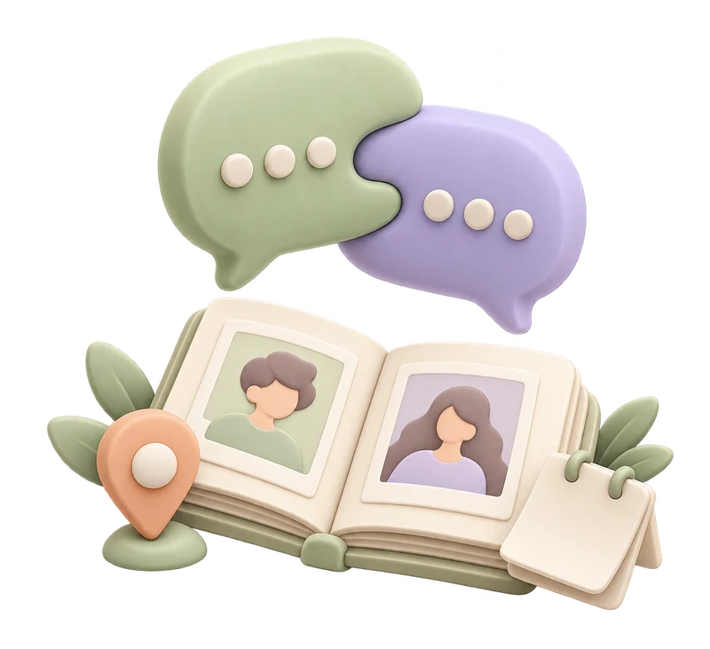

CONNECTIONS THAT GROW
네트워킹좋은 만남, 다음 이야기.
다른 지점과 나눈 대화, 함께 배운 순간.
사진부터 작은 반응까지 차곡차곡 남겨요.

◉ 이 기기에 저장 중
MY CONNECTIONS
나의 만남 아카이브
내가 나눈 대화와 관계의 다음 장면을 기록해요.
CONNECTIONS THAT GROW
다른 지점과 나눈 대화, 함께 배운 순간.
사진부터 작은 반응까지 차곡차곡 남겨요.

MY CONNECTIONS
내가 나눈 대화와 관계의 다음 장면을 기록해요.